2 fireball patterns, just like in normal:
1 fireball set is comprised of 5 fireballs, as opposed to the normal 3.
Whichever orientation the set starts with is what it ends with — knowing this helps you anticipate the last fireball dodge.
A single Yama rotation can be partitioned using each fireball set spawn as the split point, giving us 3 parts:
This repeats indefinitely.
Each part contains 4 autos total.
The 1st auto for each part happens at the same time relative to the 1st fireball.
The starting auto/prayer depends on glyph spawns. If p1/2 had 3 fire glyphs then the kill is fire major, and the starting prayer will be mage; conversely, 3 shadow glyphs make it shadow major — range prayer.
After you're back in Yama's area, do 1 auto and make your way to start. I chose this tile because most of the movement here sits on top of the glyph, so these tiles are never accidentally ragged during p1/2.
1st fireball: move forward or to the right, depending on orientation.
As you can see in the clips, each subsequent step is towards the right (south-x), never left (north-x).
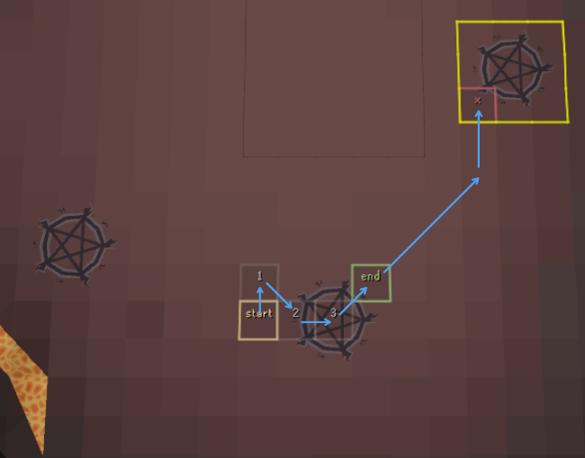
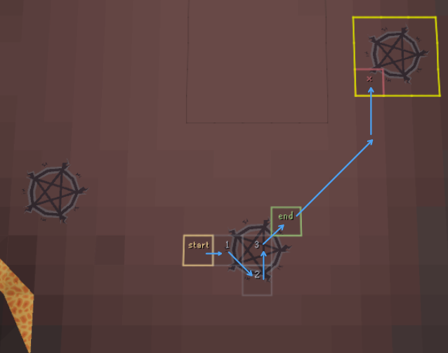
The moment you see the last fireball, click the top-left (marked x) tile of the grid. You don't have to dodge the wave here as you'll have immunity from it, so you can switch to your purge staff and prepare for the flares.
Fireballs + waves 2/3 + flares.
To make this more manageable, you can break it into 2 steps. The 1st step deals with the opening 3 fireballs and gets you ready for the ctrl-walk. The 2nd step is the ctrl-walk itself and finishing up.
Important — dodge the fireball on the correct tick:
(Don't react and dodge on tick 1)
[Each of these must be done before you have to dodge the subsequent fireball]
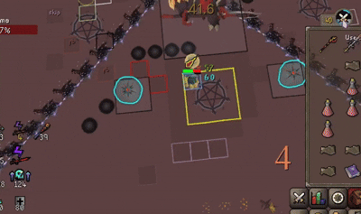
Vertical fireball
Horizontal fireball
Ctrl-walk to the bottom-middle tile.
Take it slow — try to execute 1 of these points perfectly at a time.
After the last flare, you have to dodge the final fireball (either H or V).
After dodging, click the bottom-right tile on the fireball's shadow crash, then watch the left wave and dodge accordingly.
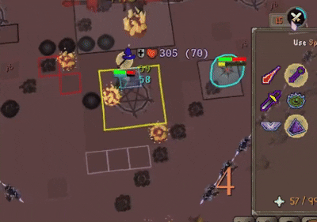
This part is just fireballs + flares.
You can do whatever movement here as long as it doesn't take you out of the grid. I prefer the following as it gets me closer to the start of the next part.
Vertical
Horizontal
(Move to 8 after last flare if horizontal.)
If you didn't make any mistakes in the previous part and are on tick, you'll land 2 shadows after the 1st fireball spawns.
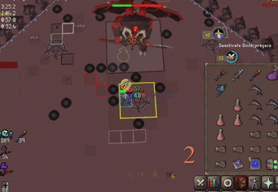
With this method, we get wave immunity from the single wave and land on the starting tile for core waves.
Horizontal
Vertical
In-game clip: https://youtu.be/YgAF3C4EsrI
[This was written before TLDR so there will be some overlap.]
A single Yama rotation can be partitioned using its 3 fireball sets:
The starting auto/prayer depends on glyph spawns. 3 fire glyphs make the kill fire major; 3 shadow glyphs make it shadow major. This distinction determines your auto-attack order throughout the fight.
If we treat autos as occurring in pairs, each part comprises 2 pairs — 4 autos in total. In a fire major, for instance, this reads: (mage → range) → (mage → range).
The cycle repeats indefinitely, provided you don't get melee'd.
There are only 2 rotations: horizontal and vertical.
Whatever the fireballs start with is what they end with.
Rotation 1 (Horizontal start): H → \ → V → / → H
Rotation 2 (Vertical start): V → \ → H → / → V
\ denotes the negative 45° fireball orientation/ denotes the positive 45°.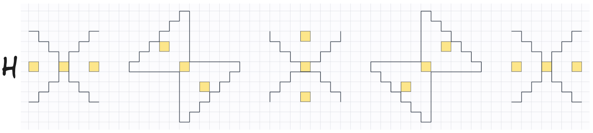
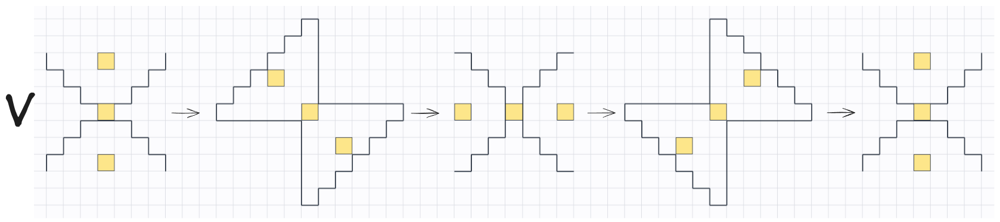
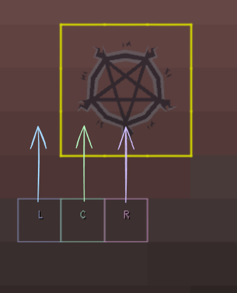
The left and right waves are independent of one another (credits to 14Pool13Gas).
l) is 1 tick "late", the intersection occurs in the L (left) column.r) is 1 tick "late", the intersection occurs in the R (right) column.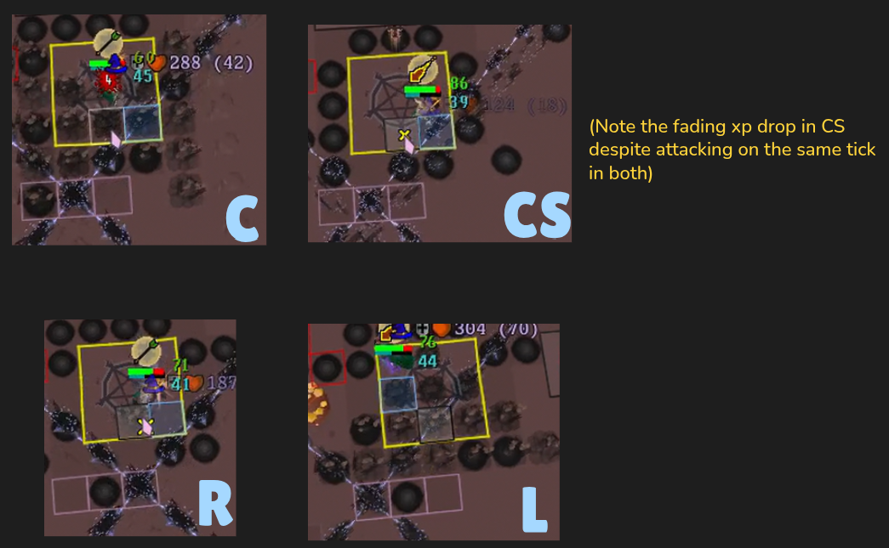
I'll use the following notation throughout:
r3 refers to the right wave in w3.The L, R, C, and CS variations apply to w2 and w3, whereas w1 is always a C.
This topic is still a work-in-progress, but the core principle is: you gain wave immunity on the tick immediately following the shadow crash from a fireball.
Call it whatever you like, I refer to the overall thing as the 5-5 cycle, and will be referring to the pt1 method as core waves cycle.
Compared to Gnomemonkey's gridlock method, this method:
pt2;A note on tick alignment: when entering pt1, you can be on 1 of 3 ticks relative to the fireball cycle (since fireballs operate on a 3-tick interval). Depending on which tick you're on, the timing of your attacks in subsequent parts may shift accordingly. For now, I'll focus on the Tick 2 cycle — the main one. Ticks 1 and 3 are more advanced, still being refined, and not essential to learn first. For reference:
One final note: each part begins on your major prayer. If the kill is fire major, every part opens with mage prayer, and vice versa.
This is where you spec the flares whilst having to deal with the waves. You actually have a few ticks of breathing room before the spec'ing begins, those running hard food can use this window to eat after the 5th shadow of pt3 (shown in 5-5 afk cycle video).
Reference vids:
The process runs as follows:
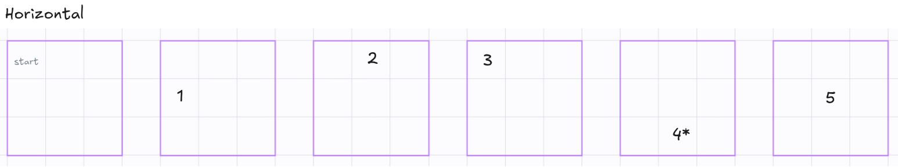
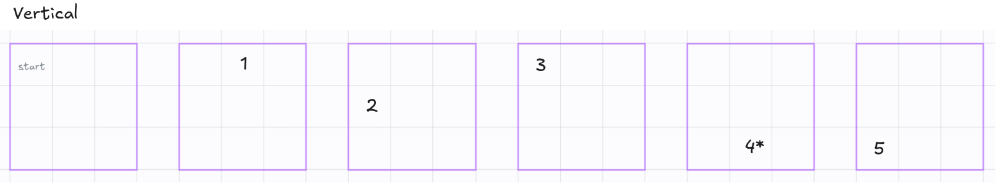
A note on prayer switching: your switches will always align with one of your spec timings, so you're better off combining the two actions.
Also take advantage of the free tick given by ctrl-walk to click your spec and switch prayers as your character begins moving, which makes clicking the final orb essentially idle.
It's worth mentioning that you're not always dodging w2 and w3 outright. Depending on the variation, it's a combination of dodging and wave immunity.
With that understood: moving to bottom-right (for w3) on the exact tick it's safe to do so (safe from shadow crash) will either dodge r3 or grant immunity, depending on the variation.
The method handles all w2 variations automatically via the ctrl-walk. The only thing you'll need to learn separately is how to solve w3.
Referring to this grid again for w3 solves:
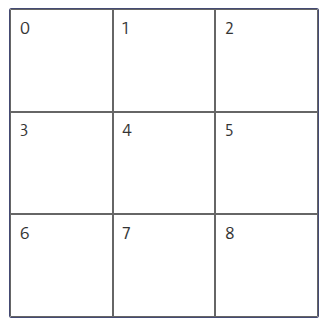
w3 solves:
The timing to move to tile 8 is always the same. What varies is the timing to move to tile 7:
7 immediately after hitting 8 (no delay).7.In practice, you'll come to feel the left wave (l3) sitting further away, and this will naturally tell you when to delay.
Accompanying vid: https://youtu.be/L34DW9iNKxk
pt1 variations concerning w3 (consists of 2 separate example clips for each).Remarks:
8, then to 7, and delay a tick if the left wave tells me to.w3, always dodge to bottom-middle (tile 7) and never further than that, as r3 can catch you if you're not attentive to the variation.8 on your shadow XP drop, provided you spec'd the last flare upon reaching tile 7 via ctrl-walk, and shadow'd boss right after without losing ticks.There are several ways to move around the grid during this part. I prefer a path that brings me close to the pt3 starting tile.
There isn't much to elaborate on here, simply spec the flares.
The process:
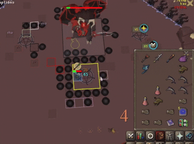
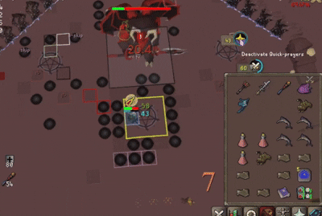
This part begins when you've finished spec'ing flares from pt2. As such, you'll be predominantly shadowing throughout.
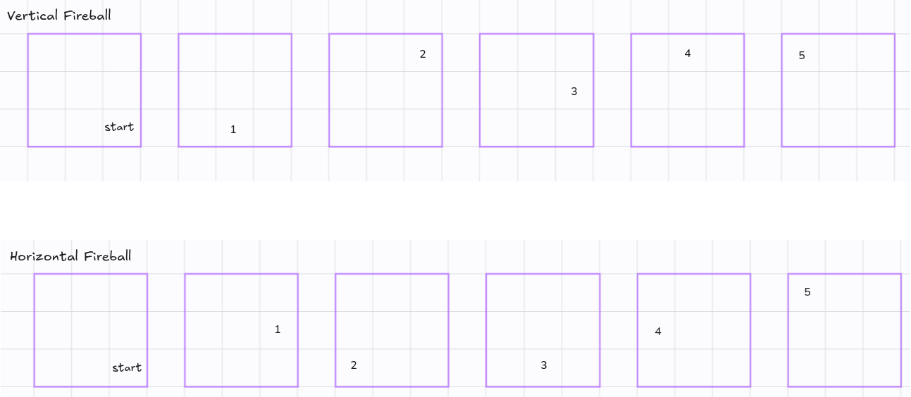
Your goal is to move to the start tile after the final pt2 fireball.
Your attack will land on 1 of 3 ticks relative to the fireball:
t1: fireball spawns and you react to H/V by clicking a tile to dodge; t2: your character moves and you click the boss; t3: XP drop.If you execute pt1 and pt2 correctly, you'll naturally land on Tick 3. However, tick loss from mistakes or eating can place you on Tick 1 or 2 instead.
On Ticks 2 and 3, you can drop the 3rd fireball on an exact tick, allowing you to dodge on that same tick and pick up the speed buff from the 2nd fireball.
On Tick 1, this isn't possible — your 2nd shadow XP drop will occur on the same tick the 3rd fireball spawns. That 2nd shadow was 4-tick due to the 1st fireball, so you don't actually lose anything: the 2nd fireball drops on the tick that would have rendered the buff useless anyway. Your 3rd shadow will also be 4-tick (due to the 3rd fireball), meaning all 5 of your shadow hits during this part will be 4-tick regardless. This is worth noting because the same logic doesn't apply to Ticks 2 and 3 — for those, you need to drop on the exact tick and move on that same tick to benefit from the 2nd fireball's buff.
All of that said, the real purpose of starting bottom-right is to make it easier to gain immunity from w1. So the most important thing is to drop the 3rd fireball on the correct tile:
2 for vertical6 for horizontalDoing so will guide you naturally to the starting tile for pt1.
Example: https://youtu.be/YgAF3C4EsrI
pt1 matters more than executing it perfectly. If your positioning is off, the resulting panic tends to snowball.Plugins used in vids/clips
Show Terrain); skybox color #5D414011847,11848,11849,56329,11850,56330,56331,56332,32941,56333,32942,32943,32944,32945,11985,32946,32947,32948,56334